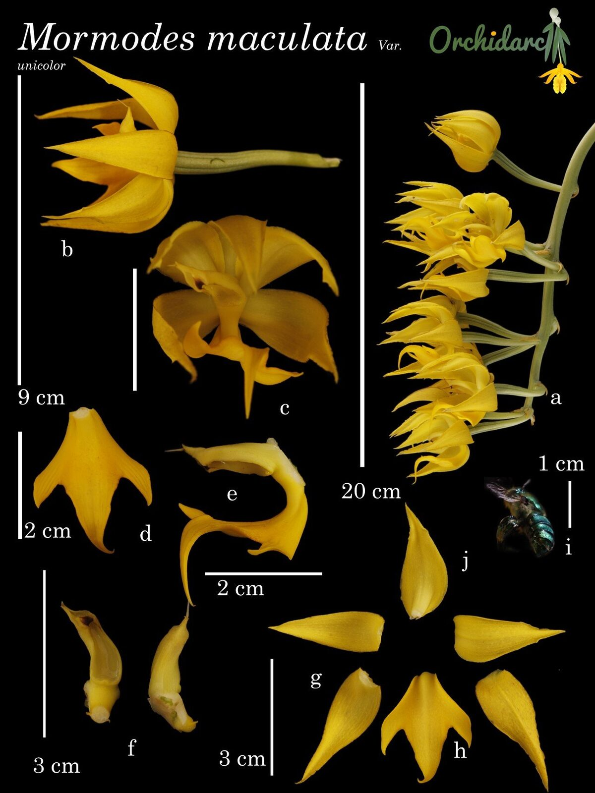

A golden, deciduous orchid of the Cofre de Perote cloud forests — apparently resilient, but still poorly documented.

Mormodes maculata belongs to Catasetinae, a group famous for sexually specialised flowers, strong fragrance and pollination by perfume-collecting bees. In the Cofre de Perote foothills it forms part of a striking group of golden-coloured orchids monitored by Orchidarc.
Plants are seasonal and deciduous, producing soft new growths followed by inflorescences from mature pseudobulbs. The local golden form has flowers with warm yellow-orange tones rather than the darker spotting seen in many cultivated or herbarium examples.
Preliminary field observations suggest that the species can persist in more disturbed situations than Acineta barkeri, including forest edges and decaying planted trees. That apparent resilience should not be mistaken for security: population size, recruitment, pollination biology and habitat thresholds remain undocumented.
In the Rufford project framework, Mormodes is treated as a priority taxon because it occupies a narrow elevational band and because baseline ecological data are still missing. The goal is to establish whether populations are stable or whether decline is being hidden by short-term persistence in degraded fragments.
Orchidarc is beginning fixed monitoring of Mormodes populations, recording site condition, host substrate, population size and seasonal changes. These data will feed into threat assessments and future Red List work for the golden orchids of the Cofre de Perote landscape.